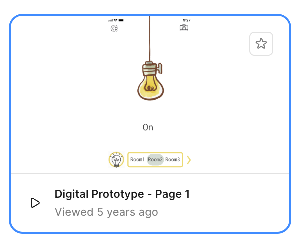
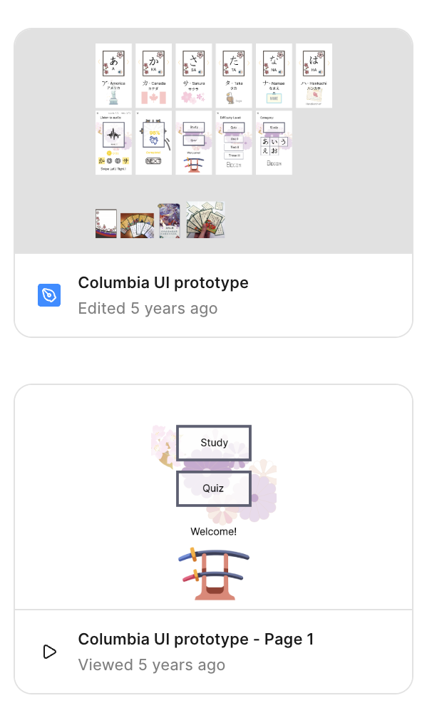
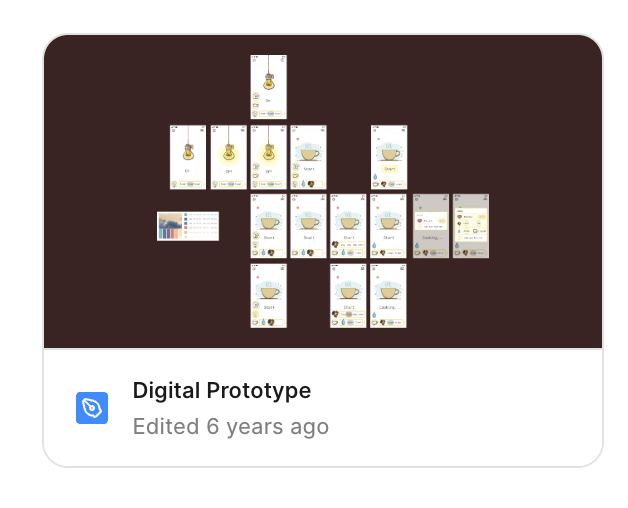

HCI & UX · Archived mobile studies
UX Prototypes
Learning, lighting, and everyday controls
Two archived mobile prototypes explore a common question: how can a compact interface make the next action understandable? One supports Japanese study and quizzes; the other communicates state and choices for everyday controls.
- My contribution
- Interface exploration · interaction flows · Figma prototyping
- Period
- Figma archive · 2020–2021
- Scope
- Mobile UI · state feedback · navigation · everyday interaction
- Status
- Archived interactive prototypes


01 · The question
Make the next action visible
Both studies began with a small-screen interaction problem. The interface needed to reduce a larger activity into a sequence that a person could understand: choose a learning mode, select a category, start a quiz, turn on a light, choose a room, or set a drink quantity.
How can navigation, labels, and state feedback make a system’s available actions legible without overwhelming the person using it?
02 · Learning prototype
Study, practice, and receive feedback
The Japanese-learning prototype opens with a direct choice between Study and Quiz. Its study flow organizes kana into categories, while the quiz flow includes level selection, questions, and a score. Flower and card motifs create a consistent visual language across the screens.
The interaction flow turns a broad learning goal into smaller decisions. A person can choose a mode, select a content group, begin an activity, and see the result of that activity without leaving the same visual system.

03 · Everyday controls
Expose system state and adjustable choices
The everyday-control prototype contains two related flows. One presents a room-based lighting control with an explicit On state and Room 1, Room 2, and Room 3 choices. The other presents a drink-preparation sequence with a visible Cooking… state, water selection, and two-cup or four-cup options.
These screens focus on what the system is doing and what the person can change. The control is not only a button; it also needs to communicate the selected room, current state, and preparation parameter.

04 · Reflection
Design the explanation around the action
These early prototypes made system state a visual design problem. A person needs to know what they can do, what they selected, and what the system is doing in response. The same concern now appears in my work on intelligent and embodied systems: how should a system communicate what it knows, what it is about to do, and what input it still needs?
The projects are preserved here as interaction studies rather than claims of a deployed product or user evaluation. Their value lies in the flows, state transitions, and interface choices documented in the archive.